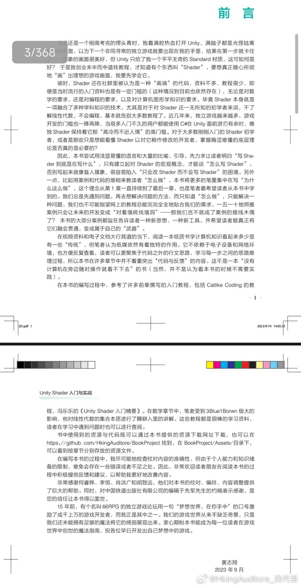

晚安
我曾经在作文里引用过unity创始人的事例，彼时“让所有人都能做游戏”对来说实在是很有吸引力。那时候ue需要购买才能使用，unity却大开方便之门点击就送，说是业界灯塔也不为过。
距离我第一次碰unity已经过去七年了，两个引擎的姿态却玩了个反转，所谓“仁义不施而攻守之势易也”，unity变得抠抠搜搜越来越封闭，而ue却开源送资产送游戏把unity按在地上摩擦。
如果我还是当年那个高中生，我肯定要指着unity鼻子大骂——即便当时我和unity毫无利益关系可言，单就是一个“信仰崩塌”就够我骂所有脏话对它伺候一遍了。但现在我没有那么激动，我只想看乐子，虽然我觉得这很恶心，但并不意外。
ue能这么阔绰，是因为他们有《堡垒之夜》这个摇钱树养着，自然站着说话不腰疼。godot、gm、rpg maker本身就是小引擎，不用追逐技术领先，压力也小很多。但unity没有摇钱树，也没有稳定的金主，杀鸡取卵虽然蠢，但还能保证当下不饿死。
就像我能大言不惭地说“理解unity”，是因为我的游戏本身就不赚钱，税收不到我头上。我在te的玩家群里还说过，只要我工作还稳定，te就可以一直免费的玩下去。颇有黑胡子“如果世界上没有黄金，我们早就是英雄了”的感觉。
开源精神和商业本身就难以共存，站着挣钱已经难能可贵，一边饿肚子一边站着挣钱更是凤毛麟角。大家都想看不为五斗米折腰的英雄，但英雄也要吃饭。如果喜欢的是英雄，那肯定不愿意看着英雄饿死，如果一定要饿死英雄，那和逼着寡妇自杀的贞节牌坊也没什么区别。抵制诱惑的英雄和宁死不屈的英雄，有时候还真不能放在一个难度系数下做比较。
——不过unity这次吃相太难看了，实在没法碰瓷英雄。我只希望它把下载税换成分成，实在不行您也去做个自研游戏捞钱吧。
只可惜我的书还没出unity就要寄了，原来我才是行业冥灯。
我曾经在作文里引用过unity创始人的事例，彼时“让所有人都能做游戏”对来说实在是很有吸引力。那时候ue需要购买才能使用，unity却大开方便之门点击就送，说是业界灯塔也不为过。
距离我第一次碰unity已经过去七年了，两个引擎的姿态却玩了个反转，所谓“仁义不施而攻守之势易也”，unity变得抠抠搜搜越来越封闭，而ue却开源送资产送游戏把unity按在地上摩擦。
如果我还是当年那个高中生，我肯定要指着unity鼻子大骂——即便当时我和unity毫无利益关系可言，单就是一个“信仰崩塌”就够我骂所有脏话对它伺候一遍了。但现在我没有那么激动，我只想看乐子，虽然我觉得这很恶心，但并不意外。
ue能这么阔绰，是因为他们有《堡垒之夜》这个摇钱树养着，自然站着说话不腰疼。godot、gm、rpg maker本身就是小引擎，不用追逐技术领先，压力也小很多。但unity没有摇钱树，也没有稳定的金主，杀鸡取卵虽然蠢，但还能保证当下不饿死。
就像我能大言不惭地说“理解unity”，是因为我的游戏本身就不赚钱，税收不到我头上。我在te的玩家群里还说过，只要我工作还稳定，te就可以一直免费的玩下去。颇有黑胡子“如果世界上没有黄金，我们早就是英雄了”的感觉。
开源精神和商业本身就难以共存，站着挣钱已经难能可贵，一边饿肚子一边站着挣钱更是凤毛麟角。大家都想看不为五斗米折腰的英雄，但英雄也要吃饭。如果喜欢的是英雄，那肯定不愿意看着英雄饿死，如果一定要饿死英雄，那和逼着寡妇自杀的贞节牌坊也没什么区别。抵制诱惑的英雄和宁死不屈的英雄，有时候还真不能放在一个难度系数下做比较。
——不过unity这次吃相太难看了，实在没法碰瓷英雄。我只希望它把下载税换成分成，实在不行您也去做个自研游戏捞钱吧。
只可惜我的书还没出unity就要寄了，原来我才是行业冥灯。
- 